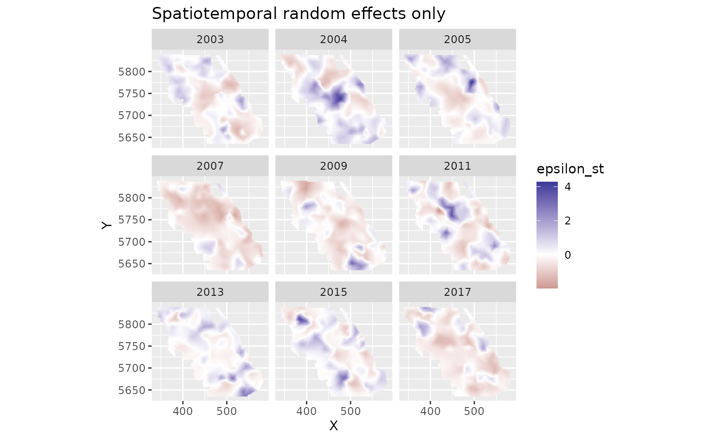
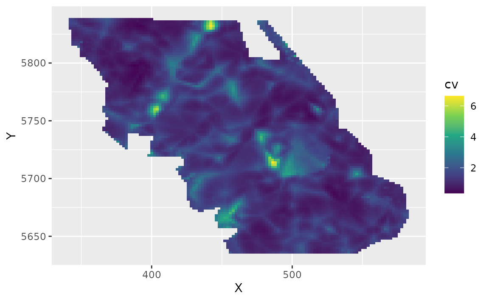
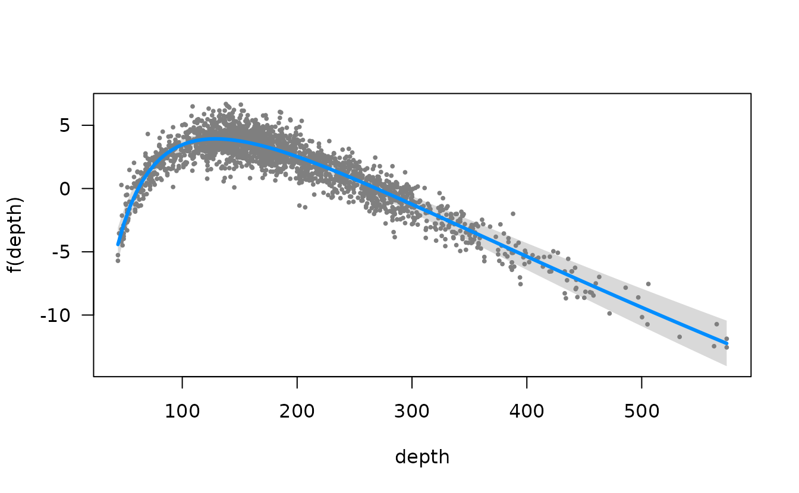
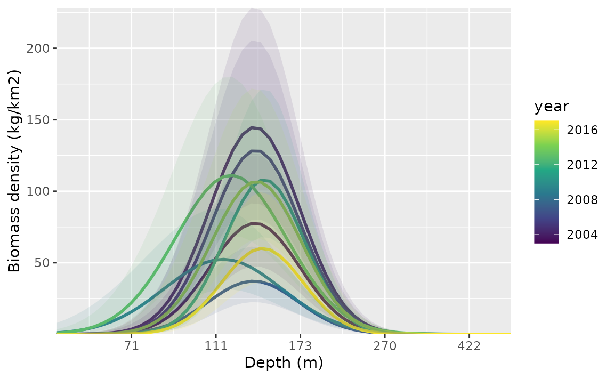

Introduction to modelling with sdmTMB
2025-11-22
Source:vignettes/articles/basic-intro.Rmd
basic-intro.RmdIf the code in this vignette has not been evaluated, a rendered version is available on the documentation site under ‘Articles’.
In this vignette, we describe the basic steps to fitting a spatial or spatiotemporal GLMM with sdmTMB. The goal is to show how to (i) build a mesh that captures spatial structure, (ii) fit increasingly rich models (GLM → spatial → spatiotemporal), (iii) interpret coefficients and random fields, and (iv) check predictions/uncertainty. These models are useful for (dynamic, i.e. changing through time) species distribution models and relative abundance index standardization among many other uses. See the model description for full model structure and equations.
We will use built-in package data for Pacific Cod from a fisheries independent trawl survey (kg caught, swept area, and tow time).
- Density is in kg/km2 (biomass standardization using swept area and tow duration).
- X and Y are coordinates in UTM zone 9. We could add these to a new
dataset with
sdmTMB::add_utm_columns(). - Depth was centered and scaled by its standard deviation so that coefficient sizes weren’t too big or small.
- There are columns for depth (
depth_scaled) and depth squared (depth_scaled2).
Before fitting, it helps to see the raw data we’re fitting to:
ggplot(pcod, aes(X, Y, col = density)) +
geom_point() +
coord_fixed() +
scale_colour_viridis_c(trans = "sqrt") +
labs(colour = "Density", title = "Observed survey tows")
glimpse(pcod)
#> Rows: 2,143
#> Columns: 12
#> $ year <int> 2003, 2003, 2003, 2003, 2003, 2003, 2003, 2003, 2003, 20…
#> $ X <dbl> 446.4752, 446.4594, 448.5987, 436.9157, 420.6101, 417.71…
#> $ Y <dbl> 5793.426, 5800.136, 5801.687, 5802.305, 5771.055, 5772.2…
#> $ depth <dbl> 201, 212, 220, 197, 256, 293, 410, 387, 285, 270, 381, 1…
#> $ density <dbl> 113.138476, 41.704922, 0.000000, 15.706138, 0.000000, 0.…
#> $ present <dbl> 1, 1, 0, 1, 0, 0, 0, 0, 0, 1, 0, 0, 0, 0, 0, 0, 0, 0, 0,…
#> $ lat <dbl> 52.28858, 52.34890, 52.36305, 52.36738, 52.08437, 52.094…
#> $ lon <dbl> -129.7847, -129.7860, -129.7549, -129.9265, -130.1586, -…
#> $ depth_mean <dbl> 5.155194, 5.155194, 5.155194, 5.155194, 5.155194, 5.1551…
#> $ depth_sd <dbl> 0.4448783, 0.4448783, 0.4448783, 0.4448783, 0.4448783, 0…
#> $ depth_scaled <dbl> 0.3329252, 0.4526914, 0.5359529, 0.2877417, 0.8766077, 1…
#> $ depth_scaled2 <dbl> 0.11083919, 0.20492947, 0.28724555, 0.08279527, 0.768440…The most basic model structure possible in sdmTMB replicates a GLM as
can be fit with glm() or a GLMM as can be fit with lme4 or
glmmTMB, for example. The spatial components in sdmTMB are included as
random fields using a triangulated (“finite element”) mesh with vertices
(knots) that approximate spatial variability. A Gaussian Markov random
field (GMRF) is a set of spatial random effects with a sparse precision
matrix; the SPDE approach (Lindgren et al., 2011) links a Gaussian
random field with Matérn covariance to this discrete GMRF. Bilinear
interpolation is used to approximate a continuous spatial field (Rue et
al., 2009; Lindgren et al., 2011) from the estimated values of the
spatial surface at these knot locations to other locations including
those of actual observations.
There are different options for creating the spatial mesh (see
sdmTMB::make_mesh()). We will start with a relatively
coarse mesh for a balance between speed and accuracy
(cutoff = 10, where cutoff is in the units of X and Y (km
here) and represents the minimum distance between knots before a new
mesh vertex is added). Smaller values create meshes with more knots
(finer spatial detail, slower fitting). Larger values create fewer knots
(faster, but coarser). In applied scenarios, start coarse, then check
whether a finer mesh changes conclusions. The circles represent
observations and the vertices are the knot locations.

We will start with a logistic regression of Pacific Cod
encounter/non-encounter in tows as a function of depth and depth
squared. We will first use sdmTMB() without any spatial
random effects (spatial = "off"). This mirrors a standard
GLM and serves as a baseline:
m <- sdmTMB(
data = pcod,
formula = present ~ depth_scaled + depth_scaled2,
family = binomial(link = "logit"),
spatial = "off"
)
m
#> Model fit by ML ['sdmTMB']
#> Formula: present ~ depth_scaled + depth_scaled2
#> Mesh: NULL (isotropic covariance)
#> Data: pcod
#> Family: binomial(link = 'logit')
#>
#> Conditional model:
#> coef.est coef.se
#> (Intercept) 0.57 0.06
#> depth_scaled -1.04 0.07
#> depth_scaled2 -0.99 0.06
#>
#> ML criterion at convergence: 1193.035
#>
#> See ?tidy.sdmTMB to extract these values as a data frame.
AIC(m)
#> [1] 2392.07For comparison, here’s the same model with glm():
m0 <- glm(
data = pcod,
formula = present ~ depth_scaled + depth_scaled2,
family = binomial(link = "logit")
)
summary(m0)
#>
#> Call:
#> glm(formula = present ~ depth_scaled + depth_scaled2, family = binomial(link = "logit"),
#> data = pcod)
#>
#> Coefficients:
#> Estimate Std. Error z value Pr(>|z|)
#> (Intercept) 0.56599 0.05979 9.467 <2e-16 ***
#> depth_scaled -1.03590 0.07266 -14.258 <2e-16 ***
#> depth_scaled2 -0.99259 0.06066 -16.363 <2e-16 ***
#> ---
#> Signif. codes: 0 '***' 0.001 '**' 0.01 '*' 0.05 '.' 0.1 ' ' 1
#>
#> (Dispersion parameter for binomial family taken to be 1)
#>
#> Null deviance: 2958.4 on 2142 degrees of freedom
#> Residual deviance: 2386.1 on 2140 degrees of freedom
#> AIC: 2392.1
#>
#> Number of Fisher Scoring iterations: 5Notice that the AIC, log likelihood, parameter estimates, and standard errors are all identical. Interpreting these coefficients: a negative linear depth term with a positive quadratic suggests peak presence at intermediate depths; the logit link means these are log-odds changes per SD of depth.
Next, we can incorporate spatial random effects into the above model
by changing spatial to "on" and adding our
mesh. These spatial random fields absorb spatial structure
not explained by depth and typically reduce residual spatial
autocorrelation. Expect coefficient estimates and their standard errors
to shift once spatial structure is accounted for:
m1 <- sdmTMB(
data = pcod,
formula = present ~ depth_scaled + depth_scaled2,
mesh = mesh,
family = binomial(link = "logit"),
spatial = "on"
)
m1
#> Spatial model fit by ML ['sdmTMB']
#> Formula: present ~ depth_scaled + depth_scaled2
#> Mesh: mesh (isotropic covariance)
#> Data: pcod
#> Family: binomial(link = 'logit')
#>
#> Conditional model:
#> coef.est coef.se
#> (Intercept) 1.14 0.44
#> depth_scaled -2.17 0.21
#> depth_scaled2 -1.59 0.13
#>
#> Matérn range: 43.54
#> Spatial SD: 1.65
#> ML criterion at convergence: 1042.157
#>
#> See ?tidy.sdmTMB to extract these values as a data frame.
AIC(m1)
#> [1] 2094.314To add spatiotemporal random fields to this model, we need to include
both the time argument that indicates what column of your data frame
contains the time slices at which spatial random fields should be
estimated (e.g., time = "year") and we need to choose
whether these fields are independent and identically distributed
(spatiotemporal = "IID"), first-order autoregressive
(spatiotemporal = "AR1", each year correlated with the
previous), or a random walk (spatiotemporal = "RW",
cumulative drift). We will stick with IID for these examples.
m2 <- sdmTMB(
data = pcod,
formula = present ~ depth_scaled + depth_scaled2,
mesh = mesh,
family = binomial(link = "logit"),
spatial = "on",
time = "year",
spatiotemporal = "IID"
)
m2
#> Spatiotemporal model fit by ML ['sdmTMB']
#> Formula: present ~ depth_scaled + depth_scaled2
#> Mesh: mesh (isotropic covariance)
#> Time column: year
#> Data: pcod
#> Family: binomial(link = 'logit')
#>
#> Conditional model:
#> coef.est coef.se
#> (Intercept) 1.37 0.58
#> depth_scaled -2.47 0.25
#> depth_scaled2 -1.83 0.15
#>
#> Matérn range: 49.96
#> Spatial SD: 1.91
#> Spatiotemporal IID SD: 0.95
#> ML criterion at convergence: 1014.753
#>
#> See ?tidy.sdmTMB to extract these values as a data frame.We can also model biomass density using a Tweedie distribution
(handles zero-inflated continuous biomass). We’ll switch to
poly() notation to make some of the plotting easier.
m3 <- sdmTMB(
data = pcod,
formula = density ~ poly(log(depth), 2),
mesh = mesh,
family = tweedie(link = "log"),
spatial = "on",
time = "year",
spatiotemporal = "IID"
)
m3
#> Spatiotemporal model fit by ML ['sdmTMB']
#> Formula: density ~ poly(log(depth), 2)
#> Mesh: mesh (isotropic covariance)
#> Time column: year
#> Data: pcod
#> Family: tweedie(link = 'log')
#>
#> Conditional model:
#> coef.est coef.se
#> (Intercept) 1.86 0.21
#> poly(log(depth), 2)1 -65.13 6.32
#> poly(log(depth), 2)2 -96.54 5.98
#>
#> Dispersion parameter: 11.03
#> Tweedie p: 1.50
#> Matérn range: 19.75
#> Spatial SD: 1.40
#> Spatiotemporal IID SD: 1.55
#> ML criterion at convergence: 6277.624
#>
#> See ?tidy.sdmTMB to extract these values as a data frame.Parameter estimates
We can view the confidence intervals on the fixed effects by using the tidy function. For interpretation, think of a 1-unit increase in a standardized covariate as 1 SD in the original units; exponentiate log-linked effects to get multiplicative changes in biomass density:
tidy(m3, conf.int = TRUE)
#> # A tibble: 3 × 5
#> term estimate std.error conf.low conf.high
#> <chr> <dbl> <dbl> <dbl> <dbl>
#> 1 (Intercept) 1.86 0.208 1.45 2.26
#> 2 poly(log(depth), 2)1 -65.1 6.32 -77.5 -52.8
#> 3 poly(log(depth), 2)2 -96.5 5.98 -108. -84.8And similarly for the random effect and variance parameters:
tidy(m3, "ran_pars", conf.int = TRUE)
#> # A tibble: 5 × 5
#> term estimate std.error conf.low conf.high
#> <chr> <dbl> <dbl> <dbl> <dbl>
#> 1 range 19.8 3.03 14.6 26.7
#> 2 phi 11.0 0.377 10.3 11.8
#> 3 sigma_O 1.40 0.162 1.12 1.76
#> 4 sigma_E 1.55 0.129 1.32 1.83
#> 5 tweedie_p 1.50 0.0119 1.48 1.52These parameters are defined as follows:
range: A derived parameter that defines the distance at which 2 points are effectively independent (actually about 13% correlated). If theshare_rangeargument is changed toFALSEthen the spatial and spatiotemporal ranges will be unique, otherwise the default is for both to share the same range.phi: Observation error scale parameter (e.g., SD in Gaussian).sigma_O: SD of the spatial process (“Omega”).sigma_E: SD of the spatiotemporal process (“Epsilon”).tweedie_p: Tweedie p (power) parameter; between 1 and 2.
If the model used AR1 spatiotemporal fields then:
-
rho: Spatiotemporal correlation between years; between -1 and 1.
Model diagnostics
We can inspect randomized quantile residuals:
pcod$resids <- residuals(m3, type = "mle-mvn") # randomized quantile residuals
qqnorm(pcod$resids)
abline(0, 1)
ggplot(pcod, aes(X, Y, col = resids)) +
scale_colour_gradient2() +
geom_point() +
facet_wrap(~year) +
coord_fixed()
Look for straight QQ lines and no large spatial patches of residuals; strong spatial patterns suggest missing covariates or a too-coarse mesh.
We can also use simulation-based randomized quantile residuals.
set.seed(19283)
s <- simulate(m3, nsim = 300, type = "mle-mvn")
dharma_residuals(s, m3)
See ?residuals.sdmTMB() and the residuals
vignette.
Spatial predictions
Now, for the purposes of this example (e.g., visualization), we want
to predict on a fine-scale grid on the entire survey domain. There is a
grid built into the package for Queen Charlotte Sound named
qcs_grid. See this
discussion thread if you’re looking for some suggestions for how to
form your own grid. Our prediction grid also needs to have all the
covariates that we used in the model above. We replicate the grid across
years so that spatiotemporal fields can be projected to every time
slice.
glimpse(qcs_grid)
#> Rows: 7,314
#> Columns: 5
#> $ X <dbl> 456, 458, 460, 462, 464, 466, 468, 470, 472, 474, 476, 4…
#> $ Y <dbl> 5636, 5636, 5636, 5636, 5636, 5636, 5636, 5636, 5636, 56…
#> $ depth <dbl> 347.08345, 223.33479, 203.74085, 183.29868, 182.99983, 1…
#> $ depth_scaled <dbl> 1.56081222, 0.56976988, 0.36336929, 0.12570465, 0.122036…
#> $ depth_scaled2 <dbl> 2.436134794, 0.324637712, 0.132037240, 0.015801659, 0.01…We can replicate our grid across all necessary years:
grid_yrs <- replicate_df(qcs_grid, "year", unique(pcod$year))Now we will make the predictions on new data:
predictions <- predict(m3, newdata = grid_yrs)Let’s make a small function to help make maps.
plot_map <- function(dat, column) {
ggplot(dat, aes(X, Y, fill = {{ column }})) +
geom_raster() +
coord_fixed()
}The {{ }} syntax is just a “tidy-eval
helper” that lets us supply the unquoted column name and pass it on
to ggplot.
There are four kinds of predictions that we get out of the model. Use
cases: - est: fixed + spatial + spatiotemporal; use for
maps and indices. - est_non_rf: fixed effects only; use to
understand covariate-driven signal. - omega_s: spatial
random effects; use to see persistent spatial deviations. -
epsilon_st: spatiotemporal random effects; use to see
year-specific anomalies.
First, we will show the predictions that incorporate all fixed effects and random effects:
plot_map(predictions, exp(est)) +
scale_fill_viridis_c(
trans = "sqrt",
# trim extreme high values to make spatial variation more visible:
na.value = "yellow", limits = c(0, quantile(exp(predictions$est), 0.995))
) +
facet_wrap(~year) +
ggtitle("Prediction (fixed effects + all random effects)",
subtitle = paste("maximum estimated biomass density =", round(max(exp(predictions$est))))
)
We can also look at just the fixed effects, here only a quadratic effect of depth:
plot_map(predictions, exp(est_non_rf)) +
scale_fill_viridis_c(trans = "sqrt") +
ggtitle("Prediction (fixed effects only)")
We can look at the spatial random effects that represent consistent deviations in space through time that are not accounted for by our fixed effects. In other words, these deviations represent consistent spatially structured biotic and abiotic factors that are affecting biomass density but are not accounted for in the model.
plot_map(predictions, omega_s) +
scale_fill_gradient2() +
ggtitle("Spatial random effects only")
And finally we can look at the spatiotemporal random effects that represent deviation from the fixed effect predictions and the spatial random effect deviations. These represent spatially structured biotic and abiotic factors that are changing through time and are not accounted for in the model.
plot_map(predictions, epsilon_st) +
scale_fill_gradient2() +
facet_wrap(~year) +
ggtitle("Spatiotemporal random effects only")
We can also estimate the uncertainty in our spatiotemporal density
predictions using simulations from the joint precision matrix by setting
nsim > 0 in the predict function. Here we generate 100
estimates and use apply() to calculate upper and lower
confidence intervals, a standard deviation, and a coefficient of
variation (CV).
sim <- predict(m3, newdata = grid_yrs, nsim = 100)
sim_last <- sim[grid_yrs$year == max(grid_yrs$year), ] # just plot last year
pred_last <- predictions[predictions$year == max(grid_yrs$year), ]
pred_last$lwr <- apply(exp(sim_last), 1, quantile, probs = 0.025)
pred_last$upr <- apply(exp(sim_last), 1, quantile, probs = 0.975)
pred_last$sd <- round(apply(exp(sim_last), 1, function(x) sd(x)), 2)
pred_last$cv <- round(apply(exp(sim_last), 1, function(x) sd(x) / mean(x)), 2)Plot the CV on the estimates:
ggplot(pred_last, aes(X, Y, fill = cv)) +
geom_raster() +
scale_fill_viridis_c()
Conditional effects
We can visualize the conditional effect of any covariates by feeding simplified data frames to the predict function that fix covariate values we want fixed (e.g., at means) and vary parameters we want to visualize (across a range of values):
nd <- data.frame(
depth = seq(min(pcod$depth),
max(pcod$depth),
length.out = 100
),
year = 2015L # a chosen year
)
p <- predict(m3, newdata = nd, se_fit = TRUE, re_form = NA)
ggplot(p, aes(depth, exp(est),
ymin = exp(est - 1.96 * est_se),
ymax = exp(est + 1.96 * est_se)
)) +
geom_line() +
geom_ribbon(alpha = 0.4) +
scale_x_continuous() +
coord_cartesian(expand = F) +
labs(x = "Depth (m)", y = "Biomass density (kg/km2)")
We could also do this with the visreg package. This version is in
link space and the residuals are partial randomized quantile residuals.
See the scale argument in visreg for response scale
plots.
visreg::visreg(m3, "depth")
Or the ggeffects package for a marginal effects plot. This will also be faster since it relies on the already estimated coefficients and variance-covariance matrix.
ggeffects::ggeffect(m3, "depth [0:500 by=1]") |> plot()
#> Warning: Removed 1 row containing missing values or values outside the scale range
#> (`geom_line()`).
#> Warning: Removed 1 row containing missing values or values outside the scale range
#> (`geom_ribbon()`).
Time-varying effects
We could also let the effect of depth vary through time. We set up
the time-varying coefficients to follow an AR1 process by setting
time_varying_type = "ar1" (each year’s coefficient is
correlated with the previous year’s). With "ar1" or
"rw0", the fixed effects represent the starting point of
the time series and the time-varying process represents deviations from
this over time. If, instead, we had used
time_varying_type = "rw", the first time step of the random
effect process would represent the initial year values and we would want
to omit the matching effects in the main formula. For example:
We include a full length of time increments with
extra_time to ensure we estimate time-varying coefficient
values for each year, including any years that are missing from our
data. For this example, we turn off the spatiotemporal random effects
because we were having convergence issues with them turned on.
m4 <- sdmTMB(
density ~ 1 + depth_scaled + depth_scaled2,
data = pcod,
time_varying = ~ 1 + depth_scaled + depth_scaled2,
time_varying_type = "ar1",
extra_time = seq(min(pcod$year), max(pcod$year)),
mesh = mesh,
family = tweedie(link = "log"),
spatial = "on",
time = "year",
spatiotemporal = "off"
)
m4
#> Spatial model fit by ML ['sdmTMB']
#> Formula: density ~ 1 + depth_scaled + depth_scaled2
#> Mesh: mesh (isotropic covariance)
#> Time column: year
#> Data: pcod
#> Family: tweedie(link = 'log')
#>
#> Conditional model:
#> coef.est coef.se
#> (Intercept) 3.84 0.28
#> depth_scaled -1.91 0.16
#> depth_scaled2 -1.72 0.18
#>
#> Time-varying parameters:
#> coef.est coef.se
#> (Intercept)-2003 0.00 0.08
#> (Intercept)-2004 0.21 0.08
#> (Intercept)-2005 0.17 0.08
#> (Intercept)-2006 -0.03 0.16
#> (Intercept)-2007 -0.25 0.09
#> (Intercept)-2008 -0.15 0.21
#> (Intercept)-2009 -0.25 0.08
#> (Intercept)-2010 -0.03 0.16
#> (Intercept)-2011 0.15 0.08
#> (Intercept)-2012 0.05 0.17
#> (Intercept)-2013 0.03 0.08
#> (Intercept)-2014 0.04 0.17
#> (Intercept)-2015 0.12 0.08
#> (Intercept)-2016 0.02 0.16
#> (Intercept)-2017 -0.06 0.08
#> depth_scaled-2003 0.00 0.04
#> depth_scaled-2004 0.00 0.04
#> depth_scaled-2005 -0.01 0.05
#> depth_scaled-2006 0.00 0.05
#> depth_scaled-2007 -0.01 0.07
#> depth_scaled-2008 0.00 0.04
#> depth_scaled-2009 0.01 0.06
#> depth_scaled-2010 0.00 0.05
#> depth_scaled-2011 0.01 0.05
#> depth_scaled-2012 0.00 0.04
#> depth_scaled-2013 0.00 0.04
#> depth_scaled-2014 0.00 0.05
#> depth_scaled-2015 0.03 0.11
#> depth_scaled-2016 0.00 0.04
#> depth_scaled-2017 -0.02 0.10
#> depth_scaled2-2003 -0.05 0.22
#> depth_scaled2-2004 -0.04 0.19
#> depth_scaled2-2005 -0.11 0.22
#> depth_scaled2-2006 0.00 0.42
#> depth_scaled2-2007 -0.02 0.24
#> depth_scaled2-2008 0.01 0.50
#> depth_scaled2-2009 0.69 0.19
#> depth_scaled2-2010 0.00 0.42
#> depth_scaled2-2011 -0.50 0.23
#> depth_scaled2-2012 0.00 0.42
#> depth_scaled2-2013 0.56 0.17
#> depth_scaled2-2014 0.00 0.46
#> depth_scaled2-2015 -0.06 0.23
#> depth_scaled2-2016 0.00 0.46
#> depth_scaled2-2017 -0.45 0.25
#> rho-(Intercept) 0.34 0.39
#> rho-depth_scaled 0.00 1.19
#> rho-depth_scaled2 0.01 0.40
#>
#> Dispersion parameter: 12.37
#> Tweedie p: 1.58
#> Matérn range: 15.41
#> Spatial SD: 1.75
#> ML criterion at convergence: 6361.987
#>
#> See ?tidy.sdmTMB to extract these values as a data frame.To plot these, we make a data frame that contains all combinations of
the time-varying covariate and time. This is easily created using
expand.grid() or tidyr::expand_grid().
nd <- expand.grid(
depth_scaled = seq(min(pcod$depth_scaled) + 0.2,
max(pcod$depth_scaled) - 0.2,
length.out = 50
),
year = unique(pcod$year) # all years
)
nd$depth_scaled2 <- nd$depth_scaled^2
p <- predict(m4, newdata = nd, se_fit = TRUE, re_form = NA)
ggplot(p, aes(depth_scaled, exp(est),
ymin = exp(est - 1.96 * est_se),
ymax = exp(est + 1.96 * est_se),
group = as.factor(year)
)) +
geom_line(aes(colour = year), lwd = 1) +
geom_ribbon(aes(fill = year), alpha = 0.1) +
scale_colour_viridis_c() +
scale_fill_viridis_c() +
scale_x_continuous(labels = function(x) round(exp(x * pcod$depth_sd[1] + pcod$depth_mean[1]))) +
coord_cartesian(expand = F) +
labs(x = "Depth (m)", y = "Biomass density (kg/km2)")